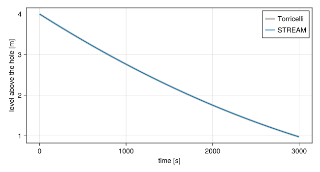

Loss of coolant
A loss-of-coolant accident in a pool reactor is a break below the pool's surface: a severed pipe, a failed seal, a valve left open. Water leaves through it, the level falls, and if nothing stops it the core uncovers. STREAM follows the inventory and the flows up to that point, with three components: a Tank for each body of water with a free surface, an Orifice for the break, and an Environment for the room the water goes to. This page gives their equations, and the choices a tank asks for in the steady state.
A tank
A tank holds liquid under a free surface at pressure $p_s$, usually the atmosphere. Its nozzles sit at heights $z_k$ above its floor. The liquid in a tank is at rest, so the pressure at each nozzle is hydrostatic:
\[p_k = p_s + ρ\,g\,(L - z_k),\]
with $L$ the level. A nozzle's driving head falls as the tank drains, and reaches zero when the surface comes down to it. The tank model keeps the same law below that, which makes the head negative: the tank does not shut a nozzle the surface has passed. Liquid leaves through it under the negative head as though the surface were still above it. A line whose nozzle can uncover needs a valve that shuts it there, on a StateMachine transition on the level.
The level follows the net inflow. With $ṁ_k$ positive into the tank and $A(L)$ the surface area at level $L$,
\[ρ\,A(L)\,\frac{dL}{dt} = \sum_k ṁ_k.\]
The area may change with height: a pool with a step in its wall, or a tank with a sloping side. The inventory $M = ρ V(L)$ is reported alongside.
A tank's temperature is either held at a value, fixed_temperature=true, or follows the energy the inflows bring:
\[ρ\,V(L)\,c_p\,\frac{dT}{dt} = \sum_k \max(ṁ_k, 0)\,c_p\,(T_k - T) + Q_\text{ext}.\]
Only inflows appear. Liquid leaving a well-mixed tank leaves at the tank's own temperature, so it carries away mass but changes nothing per kilogram left behind. Holding the temperature is the right model for a large pool over a transient that cannot warm it noticeably, and for a tank whose temperature is set by something left out of the model, such as the heat exchanger that holds a pool at its operating temperature.
The steady state of a tank
A steady state is where every time derivative vanishes. For a tank that means the net inflow is zero, which says nothing about the level: any level with balanced flows is steady. Whether the level is determined depends on the rest of the model, and so does the temperature. A tank therefore asks two questions of a steady solve.
Is its level pinned? While the parameter pinned is true, the default, the level is held at L0, and the net inflow is left free. A pinned tank in a steady state can have flow draining out of it, unbalanced; the transient that follows from it then starts with the level moving. Released, pinned => false, the level is an unknown, set by the condition that the flows balance.
Does it hold its temperature? With fixed_temperature=true it does, whatever flows in. With false, the steady temperature is the one at which the inflows bring no net heat: the mix of the inflows' temperatures, plus whatever $Q_\text{ext}$ adds.
Which answers are right depends on where the tank sits:
| The tank | Level | Temperature |
|---|---|---|
| in a loop that flows through it, such as a decay tank | pinned, or free if the rest of the model fixes the inventory | free: it takes the temperature of the water flowing in |
| with no inflow in the steady state, such as a sealed or a standby tank | pinned | held, or free with the run started from the declared state rather than a steady solve |
| fed by a pump and drained by a hole | free: it settles where the drain passes the feed | either |
Two combinations have no unique steady state:
- Every tank free in a closed system. Moving water from one tank to another leaves every flow balanced, so the levels are undetermined: one tank must be pinned, as one pressure must be fixed in a closed loop of pipes. A free tank is well determined only when what feeds or drains it depends on its level.
- A free temperature with no inflow. Nothing sets it. Hold it, or skip the steady solve and start the transient from the declared state,
solve_transient(sys, op, times)with an operating point that releases the pin.
Set up a tank for the steady solve shows each case, and the pool and decay tank tutorial uses a pinned pool with its temperature held and a free decay tank whose temperature follows the core's outlet.
A hole
Liquid leaving a vessel through a hole accelerates from rest to a jet. Without losses, Bernoulli's equation between the vessel and the jet gives the jet's speed from the pressure difference across the hole, $u = \sqrt{2Δp/ρ}$. Two things make the real flow smaller. The streamlines converging on a sharp edge keep converging past it, so the jet narrows to a vena contracta of area $C_c A$ smaller than the hole's. And friction takes a little of the speed, $C_v u$. Their product is the discharge coefficient, $C_d = C_c C_v$, and an open Orifice passes
\[ṁ = C_d\,A\,\sqrt{2\,ρ\,Δp}.\]
The density is taken on the side the flow comes from. discharge_cd gives the turbulent $C_d$ of common holes: 0.61 for a sharp-edged hole, set by its contraction, close to 1 for a rounded entrance with none, and values between for short tubes and severed pipe ends. Below a throat Reynolds number of about $10^4$ viscosity lowers it further, and lichtarowicz_cd gives the correlation of (Lichtarowicz et al., 1965) for a bore of length $L/d$, which the orifice evaluates at its own throat Reynolds number when handed it as a function.
The square root has an infinite slope at $Δp = 0$, where the flow through a valve that is sealing, or one whose flow reverses, has to pass. The orifice rounds the corner off over a pressure difference dp_linear:
\[ṁ = C_d\,A\,\sqrt{2ρ}\;\frac{Δp}{\left(Δp^2 + Δp_\text{lin}^2\right)^{1/4}},\]
which is the square-root law for $|Δp| ≫ Δp_\text{lin}$ and linear in $Δp$ near zero. Set $Δp_\text{lin}$ well below the pressure differences that matter, a fraction of a pascal to a pascal for a break.
A hole opens and shuts with its machine, over 1/open_rate seconds along a smooth ramp, as a Flapper does. Shut, it passes no flow and takes whatever pressure difference the loop puts across it, so the intact plant solves with the break already in place.
Draining through a hole
A tank of constant area $A_t$ draining through a hole of area $a$ at its floor, with the level $h$ above the hole, loses $ρ C_d a \sqrt{2 g h}$ a second. Its level falls as
\[A_t\,\frac{dh}{dt} = -C_d\,a\,\sqrt{2\,g\,h} \quad\Longrightarrow\quad \sqrt{h(t)} = \sqrt{h_0} - \frac{C_d\,a}{A_t}\sqrt{\frac{g}{2}}\;t,\]
Torricelli's law: the level falls fastest at first and ever more slowly, and the time to drain from $h_0$ to $h_1$ is
\[t = \frac{A_t}{C_d\,a}\sqrt{\frac{2}{g}}\left(\sqrt{h_0} - \sqrt{h_1}\right).\]
STREAM reproduces it:
using STREAM, CairoMakieusing STREAM.Components: Tank, Orifice, Environment, StateMachineusing STREAM.Assemblies: inseriesusing STREAM.LocalLoss: discharge_cdusing ModelingToolkit: @named, mtkcompileA_t, a, h0 = 2.0, 5.0e-4, 4.0cd = discharge_cd(:sharp)@named pool = Tank(; area=A_t, L0=h0, ports=(bottom=0.0,))@named hole = Orifice(; area=a, cd, dp_linear=1e-3, machine=StateMachine(; initial_state=:OPEN))@named room = Environment()@named draining = assembly(inseries(pool.bottom, hole, room.port), pool, hole, room)sys = mtkcompile(draining)times = range(0.0, 3000.0; length=301)sol = solve_transient(sys, solve_steady(sys), times; overrides=[sys.pool.pinned => false])h_exact(t) = (sqrt(h0) - cd * a / A_t * sqrt(G_EARTH / 2) * t)^2fig = Figure(size=(650, 350))ax = Axis(fig[1, 1]; xlabel="time [s]", ylabel="level above the hole [m]")lines!(ax, times, h_exact.(times); label="Torricelli", linewidth=4, color=(:gray, 0.5))lines!(ax, sol.t, sol[sys.pool.L]; label="STREAM")axislegend(ax)fig
The two agree to
deviation = maximum(abs, sol[sys.pool.L] .- h_exact.(sol.t))@assert deviation < 1e-2deviation6.857044210661911e-5metres over a fall of more than two.
Flashing at the throat
The pressure at a vena contracta is below the vessel's, by the jet's dynamic pressure:
\[p_\text{throat} = p_\text{in} - \frac{1}{2\,ρ}\left(\frac{ṁ}{C_c\,A}\right)^2.\]
If it falls to the saturation pressure of the liquid, the liquid flashes there, and the flow is no longer single-phase; the law above then overstates it. An orifice built with a contraction coefficient cc reports its throat pressure and its subcooling, the saturation temperature at that pressure less the liquid's. After a run, cavitation lists the orifices whose subcooling reached zero, and when. It reads the saved times only. A StateMachine transition on the subcooling falling below zero catches the moment during the run, since the solver locates the crossing. Model a break shows both.
What the model leaves out
- Two-phase discharge. The break passes liquid by the single-phase law throughout. Hot water at a break that flashes, and the choked flow that limits it, are outside the model; the cavitation check says when a run enters that region.
- Uncovered fuel. The channels transfer heat to liquid only. Once the level falls below the top of the core, the fuel above it is cooled by steam and radiation, which nothing here models. That is where a run should stop, and why the examples end it there with an abort state.
- Pipes with no inventory. A pipe joins its two ends instantly and holds no water of its own. A long line that empties through a break, or fills, is not followed.
- Air. An uncovered nozzle does not draw air, and a siphon does not break by itself. Both are valves shut on a level, as the pool and decay tank tutorial and the siphon breaker in the
Orificedocstring show.
Python STREAM's stream-next branch carries the same model, and STREAM.jl ports its tests: the drain, a siphon, two holes, a heated pool, and a pool break.
References
- Lichtarowicz, A.; Duggins, R. K. and Markland, E. (1965). Discharge Coefficients for Incompressible Non-Cavitating Flow through Long Orifices. Journal of Mechanical Engineering Science 7, 210–219.